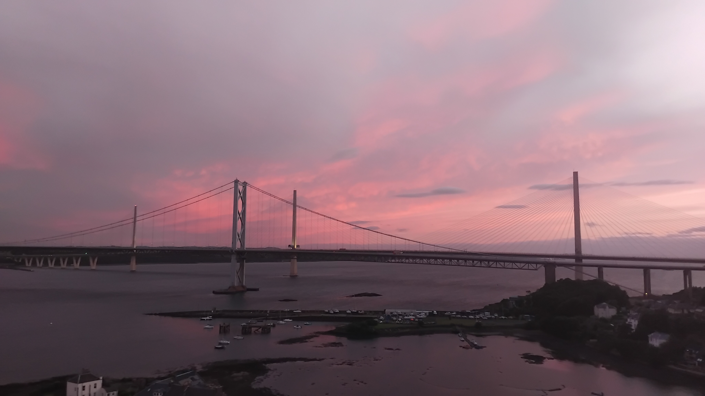

This was my first independent longer adventure and it was jam-packed but great fun. I based myself just outside of Glasgow for 4 nights and just outside of Edinburgh for another four and had a great time exploring the networks in and around the two cities. I ended up on the isle of Bute, as far north as Aberdeen and even getting to ride (completely bu chance) the old Glasgow Subway trains during their last week of operation. This page will - eventually - chronicle those adventures.